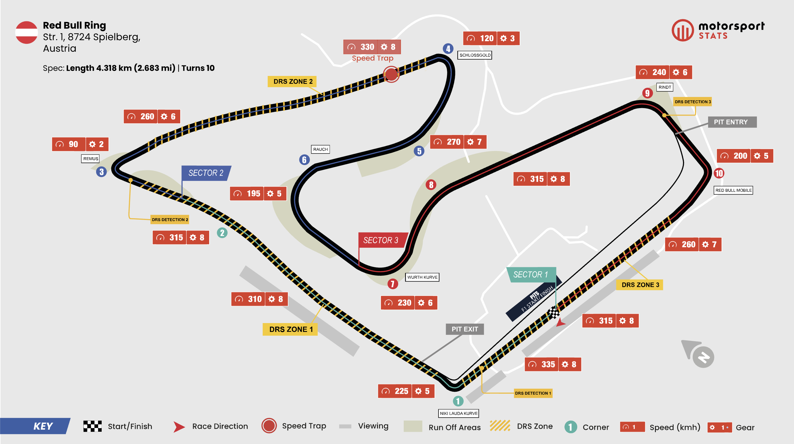

History
At the end of 2004, Jaguar Grand Prix was sold to Red Bull. Following poor financial results from parent company Ford, management decided to cut many thousands of jobs worldwide. According to that same management, it could not be justified that thousands of employees were losing their jobs while hundreds of millions of dollars continued to be pumped into the unsuccessful F1 project.
In its first year of existence, the team still raced with a Cosworth engine, even though Cosworth had also been sold by Ford. During the 2005 season, Red Bull Racing employed four drivers. The lead driver was David Coulthard, who had joined from McLaren. For the second seat, Christian Klien and Vitantonio Liuzzi alternated. Additionally, American GP2 driver Scott Speed took on the role of Friday and reserve driver at several Formula 1 Grand Prix events.
Team Members
Red Bull Racing depends on a wide technical and sporting structure that reaches far beyond the two drivers. The team combines leadership, race engineering, aerodynamics, strategy, mechanics, pit-crew staff, data analysts, logistics specialists, and communications teams working together across the full season.
Trackside work is closely linked to factory development, so race weekends feed directly into simulator work, design updates, reliability planning, and performance analysis. That balance between fast decision-making at the circuit and long-term development at the factory is a major part of how top teams stay competitive.
Red Bull Ring

Austrian Motorsport Landmark
The Red Bull Ring in Spielberg is one of the circuits most closely associated with the modern Red Bull brand. The venue began life as the Osterreichring, later became the A1 Ring, and was eventually redeveloped and reopened as the Red Bull Ring under Red Bull ownership.
Today the circuit is a regular stop on the Formula 1 calendar and serves as a natural showcase for Red Bull Racing. Its fast layout, dramatic elevation changes, and strong visual link to the team make it one of the clearest venue identities in the sport.